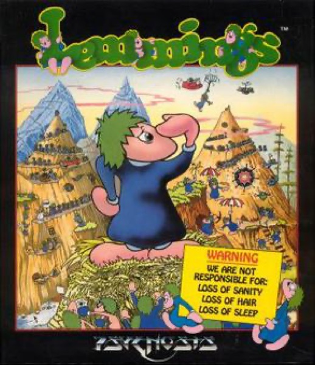

Puzzle · 1991
Lemmings
Assign jobs, save the oblivious; a mouse-driven puzzle with a body count.

Cover: Wikipedia: Lemmings (video game)
Facts
- Released
- 1991-02-14
- Genre
- Puzzle
- Category
- Puzzle
- Platforms
- Nintendo, PC, Retro home computer, Sega
- Developers
- Rockstar North
- Publishers
- SCE Studio Liverpool